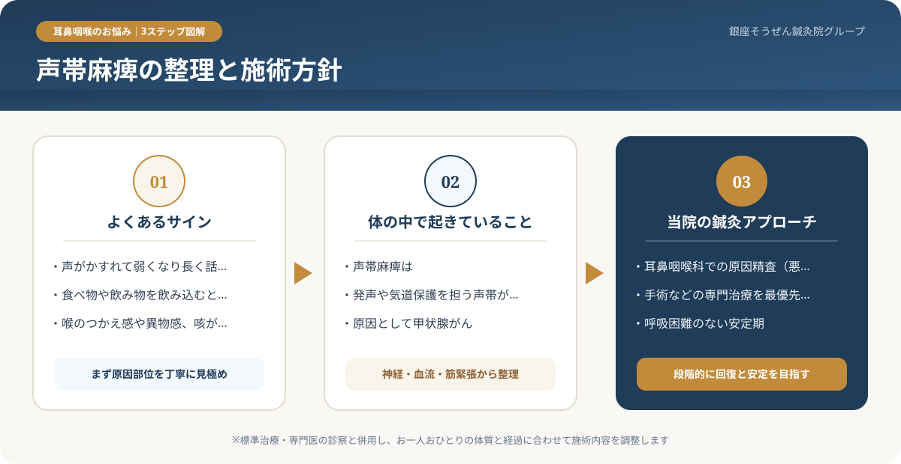

声帯麻痺の鍼灸
声帯の動きが障害される声帯麻痺。悪性腫瘍や神経圧迫の除外診断を最優先に、専門医の治療と並行して発声・喉の緊張をケアします。
まず知っておきたい要点と改善の流れ

声帯麻痺は、発声や気道保護を担う声帯が正常に動かなくなる状態です。原因として甲状腺がん・食道がん・肺がんなどの悪性腫瘍による反回神経の圧迫、胸部大動脈疾患、脳疾患、頸部や胸部の手術後の神経損傷、ウイルス感染による原因不明例などが挙げられます。両側声帯麻痺では呼吸困難を起こし命に関わる危険もあるため、まず耳鼻咽喉科で内視鏡・画像検査を受け、悪性腫瘍など重大な基礎疾患を除外することが最優先です。
このようなお悩みはありませんか？
- ✓声がかすれて弱くなり長く話し続けられない
- ✓食べ物や飲み物を飲み込むときにむせやすい
- ✓喉のつかえ感や異物感、咳が増えている
- ✓会話や運動時に息が切れやすいと感じる
当院の施術アプローチ・改善の流れ
なぜ鍼灸で改善へ向かうのか？（作用機序の図解）
声帯麻痺に対する鍼灸は、耳周囲・頸部の微小循環改善と聴覚・粘膜調整機序を通じて、お体本来の回復力を引き出します。

翳風・風池・合谷など、耳鼻咽喉領域の神経・血管と連動する経穴へ繊細にアプローチします。
首・顎まわりの深層筋緊張を緩め、内耳や粘膜周囲の滞った血流とリンパ循環を促します。
ストレスや睡眠不足で高ぶった交感神経を鎮め、音への過敏反応や粘膜の過剰反応を和らげます。
標準治療を妨げない設計で、生活支障度（THI等）の軽減と再発しにくい体調づくりを支えます。
院長YouTube解説・関連動画
声帯麻痺は命に関わることもある
声帯麻痺の症状では、声に関する問題が起きるだけでなく、呼吸困難などの症状があることもあります。
主な声帯麻痺の症状は、声が出にくい、声を出しにくい、声が枯れる、声が続かない、息が切れやすい、呼吸が苦しい、食べ物を食べた時にむせる、飲み物を飲んだ時にむせる、飲み込みにくい、などです。
片側声帯麻痺の場合は、主に声が枯れたり食べ物や飲み物の飲み込みにくさを感じたりするという症状が出ますが、両側声帯麻痺の場合は、片側声帯麻痺の症状に合わせて呼吸が苦しいなどの症状も現れることが多いです。
その場合は、命に関わる危険もあります。
・声の変化
声がかすれたり、弱くなったりします。声帯が閉じなくなると、声の質が大きく変わる可能性があります。
・呼吸の問題
特に両側の声帯麻痺がある場合、空気の流れが制限され、呼吸が困難になることがあります。
・嚥下障害
飲み込みにくさや、飲食物が気管に入り込む誤嚥が起こりやすくなります。
・咳や痰の増加
声帯が正常に機能しないことで、喉の異物感や咳が増えることがあります。
・息切れ
特に運動時に息切れが生じやすくなることがあります。
・喉の違和感や痛み
声帯の動きが制限されることで、喉に痛みや違和感を感じることがあります。
特に両側の声帯麻痺がある場合、息を吸う際に高い音が発生することがあります。
声帯麻痺が起こった場合、声帯が再び動くようになることはほとんどありません。しかし、きちんと改善に取り組むことによって声に関しては改善することができます。
元通りの声くらいまで声が改善することもあります。元通りとまではならなくても、日常生活を送る上で困らないくらいまでの声にまでは改善することが可能です。
声帯麻痺の改善方法は、リハビリテーションと手術です。リハビリテーションと手術の両方を組み合わせて改善を行うこともあります。
リハビリテーションは、声帯が麻痺した後すぐに始めます。片側声帯麻痺の場合は、吐く息を多くすることで麻痺した声帯と正常な声帯をぶつかりやすくするリハビリテーションを行うことが多いです。
程度が軽い場合は、リハビリテーションで非常に大きく改善することもあります。手術は、声帯の麻痺がおこってから6カ月以上経った後に行います。
・声の改善
認定された専門家による指導を通じて、声の強さや発声方法を改善します。声帯の効果的な使用を促進し、発声時のストレスを減らすことによって声の質を改善する効果があります。
・外科的手術
声帯注入術やチロプラステなどの方法があります。
声帯麻痺に関連する炎症や他の症状を管理するために抗炎症薬、鎮咳薬などを使います。
・呼吸管理
呼吸の問題がある場合、呼吸を容易にするための方法を、呼吸の効率を高めることを目標に学びます。
・気管切開
両側の声帯麻痺で重度の呼吸困難がある場合、永続的な呼吸の道を確保するために気管切開が行われることがあります。
・抗炎症薬
声帯や周囲の組織の腫れや炎症を軽減します。
例: イブプロフェンやプレドニゾロンなど。
・鎮咳薬
咳を抑え、喉の刺激や痛みを和らげます。
例: デキストロメトルファンやコデインなどの鎮咳シロップ。
・抗ヒスタミン薬
アレルギー反応による咽喉の症状を軽減します。
例: セチリジンやロラタジンなど。
・粘液調整薬
粘液の粘度を薄め、排出を促します。
例: グアイフェネシン。
・筋弛緩薬
声帯周辺の筋肉の緊張を緩和し、不快感を減少させます。
例: バクロフェンやシクロベンザプリン。
声帯麻痺は、手術した後に現れることが多いです。そのため、予防をするためにできることは手術をしないことです。
手術が必要な怪我や病気ができるだけ起きないように生活することが、声帯麻痺の予防には大切なのです。生活習慣を改善したり、薬は正しく使うように注意したりしましょう。
原因不明で声帯麻痺が起こることもあります。その場合は、無理に声を出さないようにすることが重要です。
後鼻漏・慢性上咽頭炎・のどの違和感のツボ図解
実際の施術ではお一人おひとりの体質・症状に合わせて選穴しますが、後鼻漏・慢性上咽頭炎・咽喉頭異常感症（梅核気）・発声障害ケアの臨床でよく用いられる代表的なツボの目安です。

📌 代表的なツボの詳細一覧表を開く（6穴） ▼
| ツボ名 | 位置の目安 | 主な狙い | セルフケアの注意点 |
|---|---|---|---|
| 廉泉（れんせん） | あごの下、のど仏の上のくぼみ | 咽頭周囲の緊張緩和・飲み込みやすさサポート | のどを強く圧迫せず軽く触れる程度にします。 |
| 扶突（ふとつ） | のど仏の高さで首の横（胸鎖乳突筋付近） | 首前面の筋緊張緩和・上咽頭周囲の循環改善 | 頸動脈の近くのため自己流の強押しは避けます。 |
| 天突（てんとつ） | 左右の鎖骨の真ん中のくぼみ | のどの詰まり感（梅核気）・咳込みの鎮静 | 気管に向かって押さず、鎖骨の裏へ斜め下に軽く触れます。 |
| 内関（ないかん） | 手首の横ジワから指3本分肘寄りの中央 | ストレス性ののどのつかえ感・逆流に伴う不快感緩和 | 自律神経の過緊張を鎮める安全な遠隔穴です。 |
| 列缺（れっけつ） | 手首の親指側、シワから指2本分肘寄り | 咽頭・気道の炎症バランスと粘膜ケア | 照海と組み合わせるとのどの乾燥感に相性が良好です。 |
| 照海（しょうかい） | 内くるぶしの真下の小さなくぼみ | のどの乾燥・イガイガ感・夜間咳の遠隔調整穴 | 足首を温めながら優しく押します。 |
国際査読論文の科学的エビデンス
国際的な医学データベース（PubMed・Cochrane等）で報告されている後鼻漏・慢性上咽頭炎・咽喉頭異常感症（梅核気）・発声障害ケア領域の代表的な査読済み鍼灸研究をまとめています（標準治療との併用や研究上の限界を含めて正確に掲載）。
📚 査読論文データ・PubMed出典リンクを開く（4件） ▼
| 年・研究デザイン | 対象・規模 | 主な結果 | 限界・出典 |
|---|---|---|---|
| 2013年 大規模多施設RCT | 季節性アレルギー性鼻炎 422名（ドイツ） | 7〜8週のRQLQ QOLがシャム比0.5点・薬単独比0.7点改善（P<0.001）、頓用薬使用も有意減少（P<0.001）。 | 1年目16週では群間差消失、臨床的意義は慎重評価。 Ann Intern Med (PMID: 23420231) |
| 2021年 メタ解析 | 耳鳴り 8 RCTs（n=504） | 生活支障度THI（MD -10.11, p<0.001）・TSI（MD -8.36, p<0.001）が有意改善。VASは有意差なし（p=0.06）。 | 組入れRCTの質・サンプル規模に限界あり。 Acupunct Med (PMID: 32772848) |
| 2026年 ネットワークメタ解析 | 突発性難聴 36研究（n=3,360・標準治療併用） | ステロイド等の標準治療への鍼灸併用で総有効率RR 1.19（p<0.0001）、3週間コースが推奨。 | エビデンス確実性は低く標準治療（早期ステロイド）併用が前提。 Complement Ther Med (PMID: 42918509) |
| 2023年 メタ解析 | 成人顎関節症 22 RCTs統合（n=471） | 標準治療併用で有効率RR 1.36・疼痛VAS MD -1.23と有意改善。 | GRADE確実性は低〜非常に低、さらなる高品質RCTが必要。 Medicine (PMID: 37746950) |
参考文献・出典
- 2013年 大規模多施設RCT（季節性アレルギー性鼻炎 422名（ドイツ））— Ann Intern Med (PMID: 23420231)
- 2021年 メタ解析（耳鳴り 8 RCTs（n=504））— Acupunct Med (PMID: 32772848)
- 2026年 ネットワークメタ解析（突発性難聴 36研究（n=3,360・標準治療併用））— Complement Ther Med (PMID: 42918509)
- 2023年 メタ解析（成人顎関節症 22 RCTs統合（n=471））— Medicine (PMID: 37746950)
よくある質問（FAQ）
Q. 急に声がかすれて戻らない場合、まず鍼灸を受けてもよいですか？▼
Q. 両側声帯麻痺で息苦しさや吸気時の高い音がある場合はどうすればよいですか？▼
あわせて読まれる関連疾患（耳鼻咽喉のお悩み）
ある日突然片耳などが聞こえにくくなる感音難聴です。発症早期の耳鼻科ステロイド治療を最優先に、早期併用や回復期の耳鳴り・めまいをケアします。
実際には音がないのに耳の中で雑音が聞こえる状態です。耳の血流や自律神経・脳の過敏さを整えるケアで軽減を目指します。
声帯を動かす反回神経が麻痺し声枯れやむせが生じる状態です。原因疾患の特定と耳鼻科精査を最優先に、回復期や安定期の体調管理を補完的に支えます。
声の酷使などで声帯に膨らみができる声帯ポリープに対し、専門医受診と安静を基本に喉周囲の巡りを整える鍼灸でサポートします。
検査で異常がないのに喉のつかえや圧迫感を感じる状態です。耳鼻科での除外診断を前提に、自律神経と首喉の深層筋を鍼灸とツボケアで整えます。
咽頭や喉頭の粘膜に炎症が起き、喉の痛みや咳、声がれを生じる病気です。重症化の兆候に注意しつつ回復と予防を支えます。
CLINICAL RECOVERY CASES
✨ 実際の臨床改善事例・回復経過を見る
銀座本院をはじめ各院での実際の改善事例を症状別に絞り込んでご確認いただけます。
おひとりで悩まず、まずはご相談ください
銀座本院・川口・大宮・横浜・博多・田無の各院でご予約を承っております。